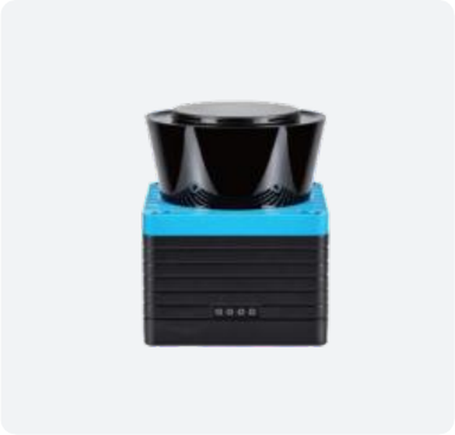
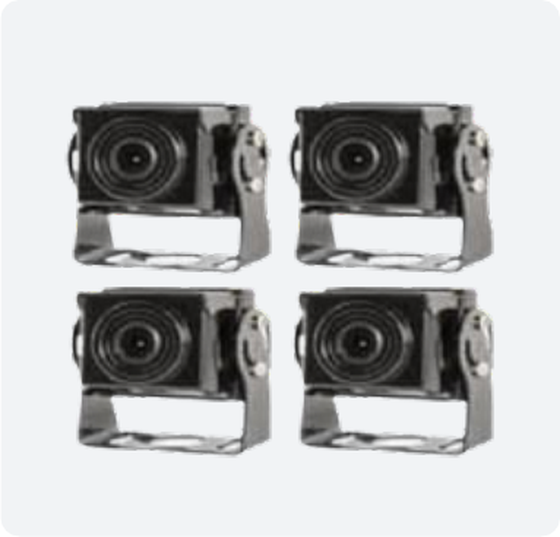
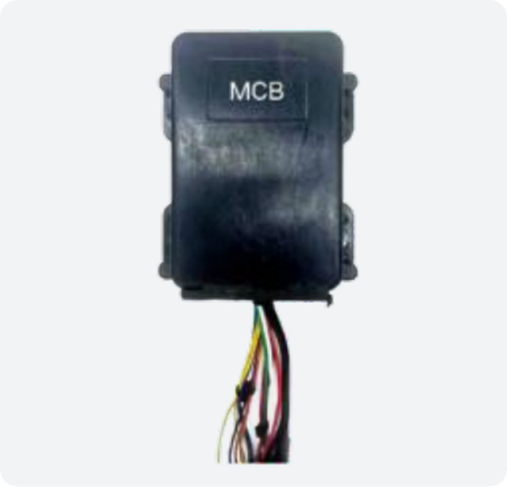
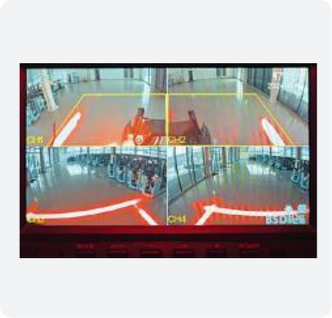

01 — Detect
LiDAR detects rear obstacles while AI cameras identify nearby people.
Forklift Safety System
DL100FL combines an FMCW LiDAR sensor for rear obstacle detection with four AI cameras for pedestrian recognition around a forklift. Configurable detection zones trigger staged warnings, automatic deceleration, and stopping to help reduce collision risks.
LiDAR detects rear obstacles while AI cameras identify nearby people.
Audible and visual alerts warn the operator as the system reduces driving speed.
The controller brings the forklift to a controlled stop in the configured danger zone.

Rear obstacle detection

Pedestrian recognition on four sides

Deceleration and stop control

Real-time monitoring and event recording
| LiDAR model | PRIVION DL100 |
|---|---|
| Detection technology | FMCW, 1550 nm |
| Detection range | 0.2–10 m |
| Horizontal field of view | 270° |
| AI cameras | 4 (front, rear, left, right) |
| Camera field of view | 130° horizontal, 75° vertical |
| Control | Detection → Warning / Deceleration → Stop |
This is a supplementary collision-risk reduction system and does not replace certified safety sensors or safety control systems.